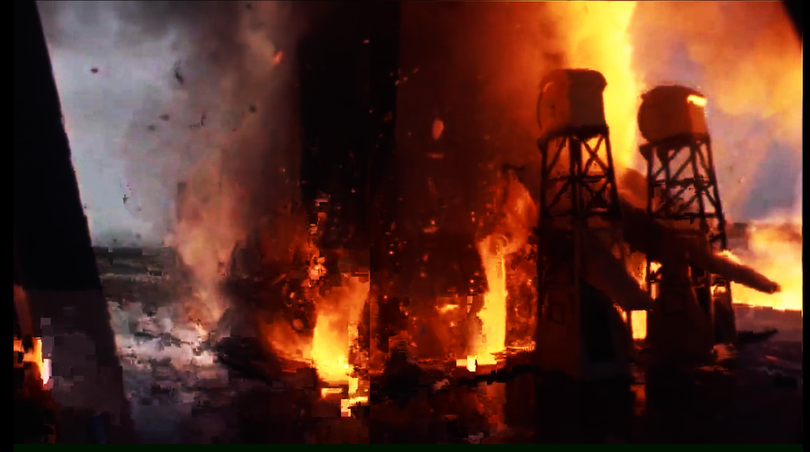
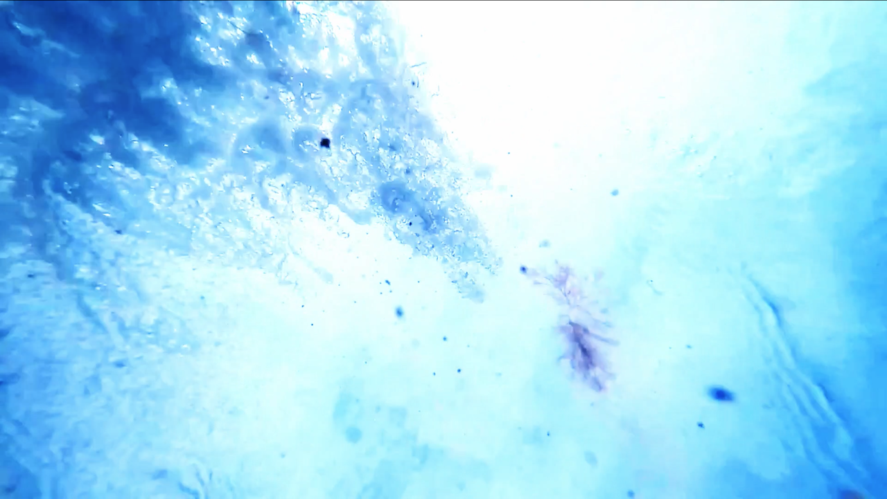
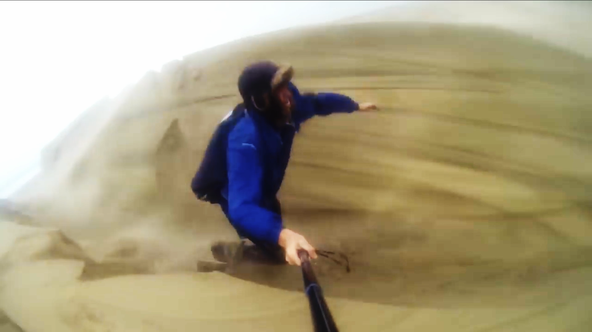
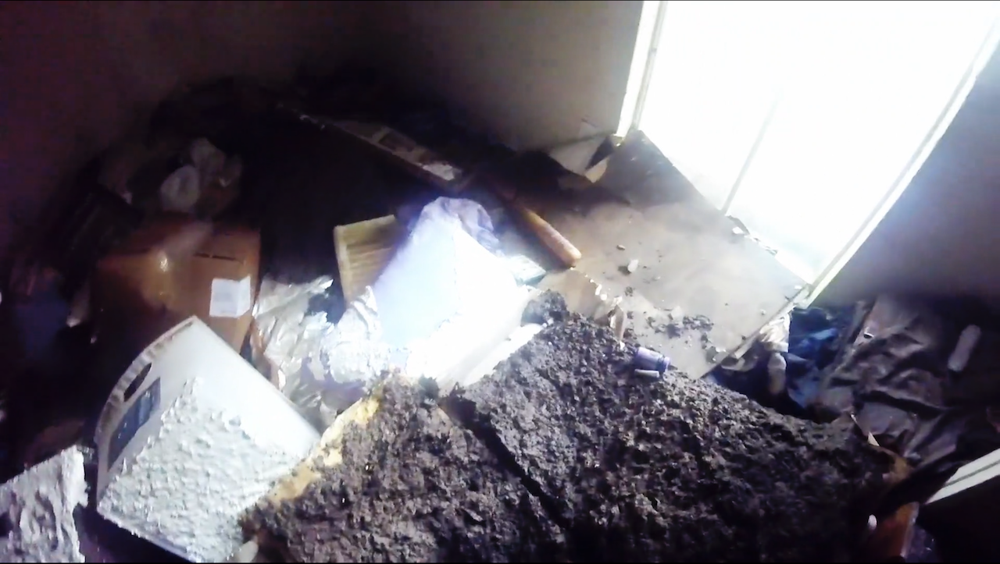

great outdoors, 2020.
Une (ré)appropriation de la théorie des quatre éléments, à l’ère des mutations écologiques. Une débâcle des oppositions entre l’intérieur et l’extérieur, l’intime et le politique, le proche et le distant, le micro et le macro. Dans l’espace d’une chambre à coucher, plusieurs processus de capture de matière et d'énergie sont générés : condensation, incandescence électrique, stockage de données numériques, lecture audio et vidéo.



